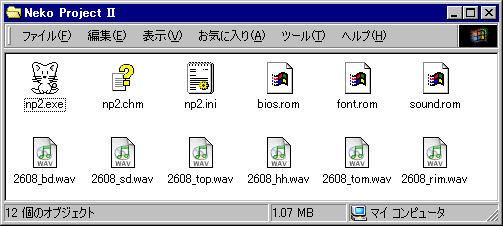

[VA]
実機のROMを保存したファイルが必要です。vaeg.exeと同じフォルダにおいてください。
[98]
88VA Eternal
Grafx単体でもそれなりの動作をしますが、実機BIOS等のファイルを用意すると より実機に近づきます。
全てvaeg.exeと同じフォルダに置いて下さい。

実機のROMを保存した以下のファイルです。
専用のツール (getromva.exe) でファイル化して下さい。
VAFONT.ROM (320KB) システムメモリエリア
バンク8,9(9はA0000-AFFFF)
VADIC.ROM (512KB) システムメモリエリア
バンクC,D
VAROM00.ROM(512KB) ROMエリア0 バンク0〜7
VAROM08.ROM(128KB)
ROMエリア0 バンク8〜9
VAROM1.ROM (128KB) ROMエリア1 バンク
実機のBIOS ROMをファイル化した物です。
専用のツールでファイル化して下さい。
ダウンロード: getbios.lzh (PC-98シリーズ MS-DOS用)
実機のフォント ROMをファイル化した物です。
専用のツールでファイル化して下さい。
ダウンロード: getbios.lzh (PC-98シリーズ MS-DOS用)
font.romの他に BMP形式のフォントファイルも使用できます。
サウンドボードに搭載されるBIOS ROMをファイル化した物です。
専用のツールでファイル化して下さい。
ダウンロード: getbios.lzh (PC-98シリーズ MS-DOS用)
OPNAに搭載されているリズム音源を wave形式で録音したファイルです。
ねこープロジェクトIIで使用するには 44KHz 16bit モノラル 無圧縮形式である必要があります。
OPNAに搭載されているリズムは以下の通りです。
| ファイル名 | 対応する音色 |
|---|---|
| 2608_bd.wav | バスドラム |
| 2608_sd.wav | スネアドラム |
| 2608_top.wav | シンバル |
| 2608_hh.wav | ハイハット |
| 2608_tom.wav | タム |
| 2608_rim.wav | リムショット |